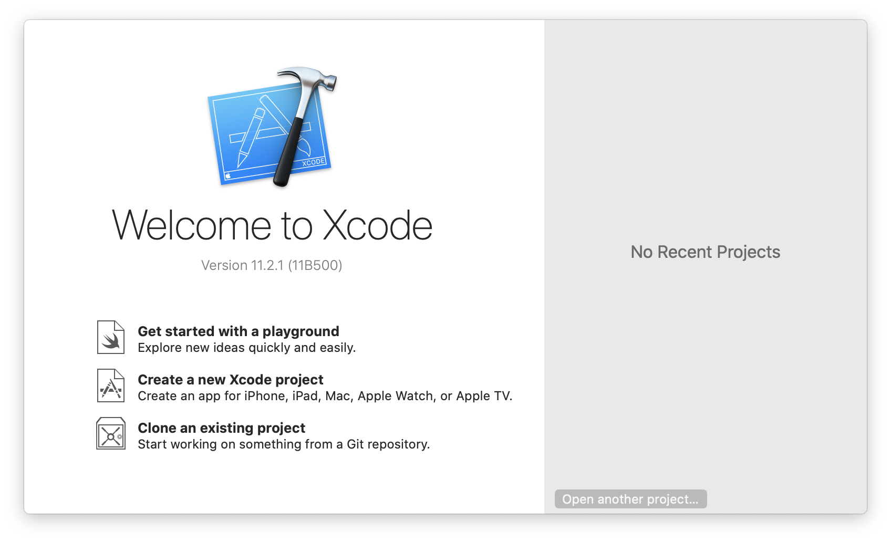
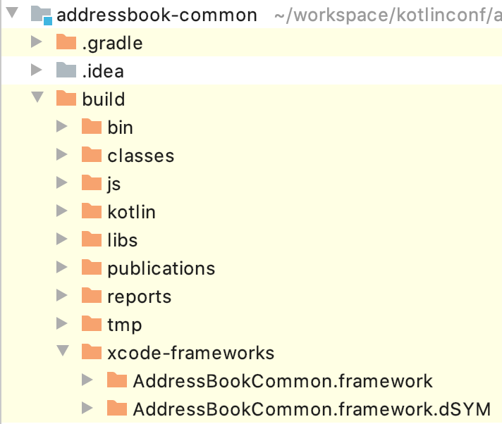
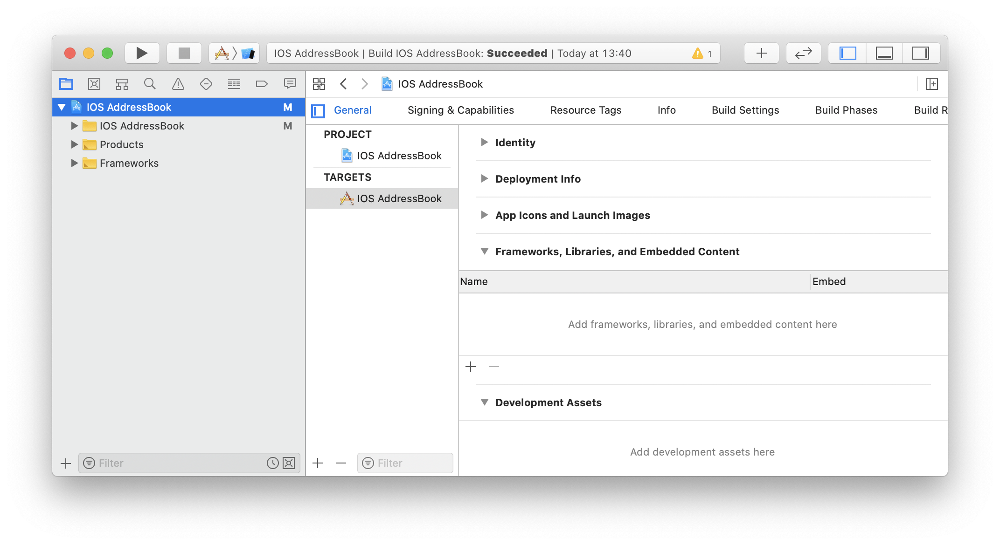
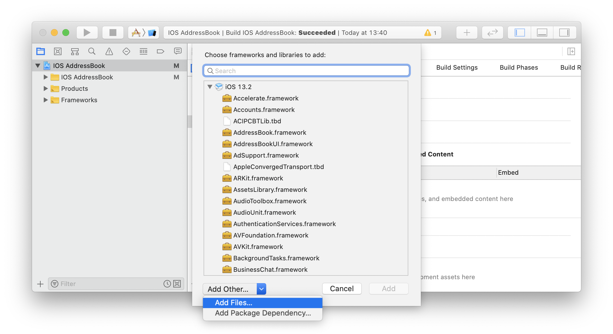
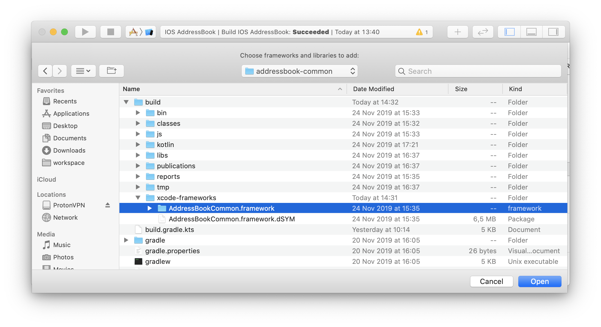
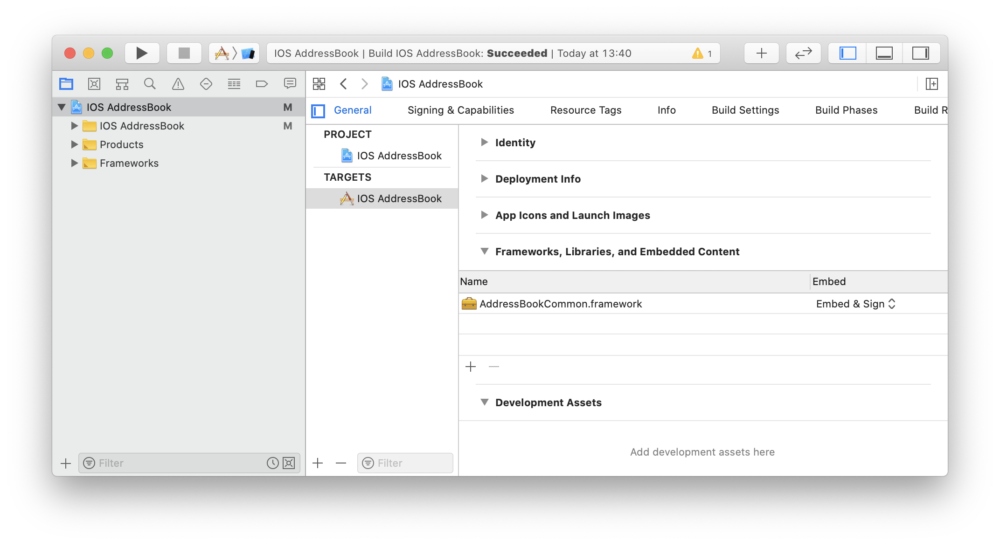
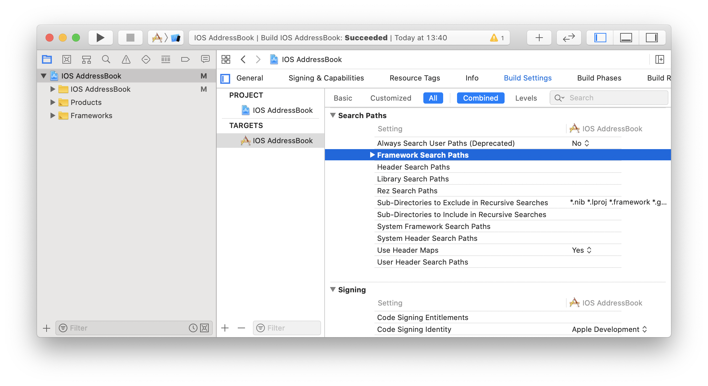
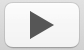
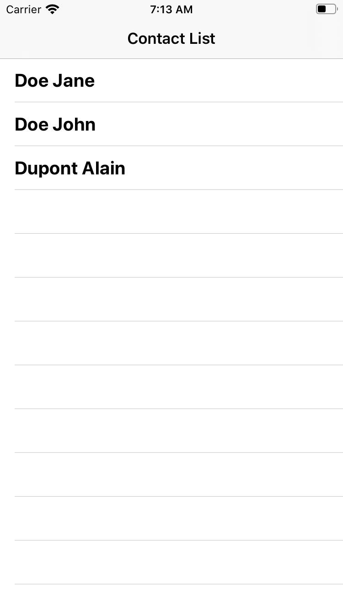

| As said in the first chapter, we are not here to take a deep dive into the different targeted platform. So, to stay focused on Kotlin multi-platform development, we will provide empty projects, ready to run for each platform. Of course, those projects need to be modified. |
Cloning the starter project
You can find the iOS starter project on GitHub.
Open a terminal and run the following Git command:
git clone https://github.com/romainbsl/mpp-workshop-ios-starter.git |
Now, open the project with Xcode, by clicking on Open another project…, in the right panel. |
Configuration
Remember, while we were building our Kotlin multi-platform library, we added a build step named packForXcode.
This task should have built and published the framework needed by Xcode to consume our library with iOS in a specific directory.

To be able to use the framework file into our Xcode project, we need to add it manually to the configuration.
 |
Open your project settings, on the General tab. Then, in Framework, Libraries and Embedded Content click the |
 |
We need to find our |
 |
Browse to your |
 |
You now see your |
Right now, if you try to build your application, it will fail. You also need to tell to Xcode where to look for the framework.
Open your project settings, on the Build Settings tab, with the filters All and Combined activated. Then find the Search Paths section |
 |
Add the directory that contains your built |
Now that we have configured our project we will be able to use our Kotlin multi-platform library directly in Swift.
Retrieve and display the contact list
For displaying a list of contacts, all our modifications will appear in the class MasterViewController. So, open it in Xcode.
|
Reminder
In our Kotlin multi-platform library we have defined the iOS target to be built as a build.gradle.kts
|
First of all, add the import onto our common library.
import UIKit
import AddressBookCommon (1)
class MasterViewController: UITableViewController {
// ...
}| 1 | Import the common library |
Prepare the view to display the contacts
Before using our shared business logic to display the contact list, we will wrote some code to prepare the UI interactions.
-
Set the flow interaction between the Master and Detail views
When the list of contacts will be displayed, we would like to click on the items to be able to see the details information for each contact. To do that, we will configure an existing Segue,
showDetail.For those who are not familiar with iOS, a Segue represents a navigation flow between two screensMasterViewController.swiftclass MasterViewController: UITableViewController { private var contactList = [Contact]() (1) // ... override func prepare(for segue: UIStoryboardSegue, sender: Any?) { if segue.identifier == "showDetail" { if let indexPath = tableView.indexPathForSelectedRow { let contact = contactList[indexPath.row] (2) let controller = (segue.destination as! UINavigationController).topViewController as! DetailViewController controller.contactId = contact.id (3) } } } // ... }1 Declare a global variable, a list of contacts, that will be used to update our view. 2 Retrieve the contact in contactList, based on the index of the clicked element of the TableView.3 The contact Id for which we want to show the details on the next screen. -
Configure what and how the TableView is display
As our class is implementing
UITableViewController, we need to implementtableView(…)functions to configure its behavior.MasterViewController.swiftclass MasterViewController: UITableViewController { // ... override func tableView(_ tableView: UITableView, numberOfRowsInSection section: Int) -> Int { return contactList.count (1) } override func tableView(_ tableView: UITableView, cellForRowAt indexPath: IndexPath) -> UITableViewCell { (2) let cell = tableView.dequeueReusableCell(withIdentifier: "Cell", for: indexPath) let contact = contactList[indexPath.row] (3) cell.textLabel!.text = contact.fullName (4) return cell } // ... }1 Create the TableView with the correct dimensions. 2 Configure the cells for each element of the TableView. 3 Get the contact from the shared variable contactList, based on the current cell index.4 Set what to display for each element of the TableView.
Consume the common library
As for the Android application, mainly, we have two steps that we need to fulfill to consume our shared library. First, we should implement the contract defined for the view, then declare and bind the presenter to it.
-
Implement the
ContactList.ViewinterfaceIn our Kotlin multi-platform library we defined our interface as part of a class, giving us something like ContactList.View. In Kotlin/Native,ContactList.Viewhas been renamedContactListView.Our first task is to implement the view, with some extras, to be able to display contacts in the existing TableView.
MasterViewController.swiftclass MasterViewController: UITableViewController, ContactListView { (1) // ... func displayContactList(contactList: [Contact]) { (2) self.contactList = contactList (3) self.tableView.reloadData() (4) } // ... }1 Implement the interface ContactListView.2 Implement the function displayContactList, defined by the interface.3 Update the global variable with new data. 4 reload the Table View to display new data. -
Bind the
ContactListPresenterto the viewFirstly, we need to declare the presenter in our class.
private var presenter: ContactListPresenter!Initialize the presenter while the view is created, by calling our manual dependency injection object
CommonInjector.override func viewDidLoad() { super.viewDidLoad() presenter = CommonInjector.init().contactListPresenter() }Attach (1) and detach (2) the view to the presenter when it is shown or concealed.
In this case, attaching the view to the presenter also trigger the function call to get the contact list.
override func viewWillAppear(_ animated: Bool) { super.viewWillAppear(animated) presenter.attachView(view: self) (1) } override func viewWillDisappear(_ animated: Bool) { super.viewWillDisappear(animated) presenter.detachView() (2) }
Run the application
Now, you can run the application onto an iOS Simulator by clicking the button  in Xcode.
 |
Here are the contacts retrieved from our backend API |
| As for Android, if you have clicked on an item from the list, you should see that nothing is shown, except static values. This is our next part, showing the contact details. |
Retrieve and display the contact details
While we were displaying the contact list, we also prepared the transition between the Master and Detail screens, by giving to the Detail view the contact Id for which we need to display the contact details.
Like for the Master view we must implement a contract and bind to a presenter.
-
Implement the
ContactDetail.ViewinterfaceIn our Kotlin multi-platform library we defined our interface as part of a class, giving us something like ContactDetail.View. In Kotlin/Native,ContactDetail.Viewhas been renamedContactDetailView.DetailViewController.swiftclass DetailViewController: UIViewController, ContactDetailView { (1) // ... (2) @IBOutlet weak var nameLabel: UILabel! @IBOutlet weak var phonesLabel: UILabel! @IBOutlet weak var addressesLabel: UILabel! // ... func displayContact(contact: Contact) { (3) nameLabel.text = contact.fullName (4) for (index,phone) in contact.phones.enumerated() { (5) phonesLabel.text! += phone.type.displayedName + ": " + phone.number if index < contact.phones.count-1 { phonesLabel.text! += "\n" } } for (index, address) in contact.addresses.enumerated() { (6) addressesLabel.text! += address.type.displayedName + ":\n " + address.street + "\n" + address.postalCode + " " + address.city + "\n" + address.country if index < contact.addresses.count - 1 { addressesLabel.text! += "\n------------------------------\n" } } } // ... }1 Implement the interface ContactDetailView2 Screen objects that will be used to display the contact details 3 Implement the function displayContact4 Display the contact name 5 Display the contact phones 6 Display the contact addresses -
Bind the
ContactDetailPresenterto the viewFirstly, we need to declare the presenter in our class.
private var presenter: ContactDetailPresenter!Initialize the presenter while the view is created, by calling our manual dependency injection object
CommonInjector.override func viewDidLoad() { super.viewDidLoad() presenter = CommonInjector.init().contactDetailPresenter() }Attach (1) and detach (3) the view to the presenter when it is shown or concealed.
In this case, attaching the view to the presenter doesn’t trigger anything. We must call the presenter ourselves to retrieve the contact details, giving a contact Id (2).
override func viewWillAppear(_ animated: Bool) { super.viewWillAppear(animated) presenter.attachView(view: self) (1) presenter.getContact(contactId: contactId!) (2) } override func viewWillDisappear(_ animated: Bool) { super.viewWillDisappear(animated) presenter.detachView() (3) }